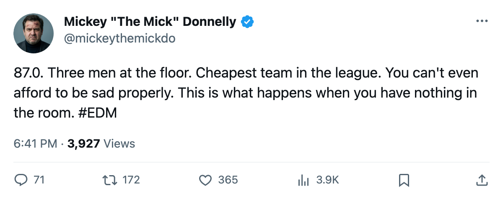
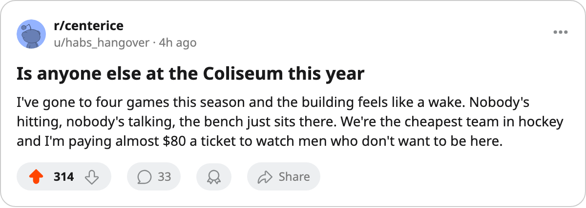

THREE MEN AT 72, SIX STRAIGHT LOSSES, $42.95M: EDMONTON CAN'T EVEN BE SAD IN STYLE
The Bureau's Morale Scale has the worst room in hockey at 87.0. The cheapest roster in the league is also the saddest. That is not a coincidence.
 Mickey "The Mick" DonnellyColumnist, ex-goalie · The Penalty Box
Mickey "The Mick" DonnellyColumnist, ex-goalie · The Penalty BoxEdmonton's club average sits at 87.0 on the Bureau's Morale Scale. That is the floor of this league. Calgary is next at 87.7, San Jose at 88.3. Three clubs within a point of each other and all three are losing.
I told you Philadelphia was the worst room in hockey back in December. The new worst room is the one nobody was watching.  Edmonton Oilers is at 87.0, three players pinned at 72 (the absolute bottom of the scale), and riding a six-game losing streak that makes 10-20-4 look generous.
Edmonton Oilers is at 87.0, three players pinned at 72 (the absolute bottom of the scale), and riding a six-game losing streak that makes 10-20-4 look generous.
Three men at 72:  Brad Isbister79,
Brad Isbister79,  Shawn Horcoff69,
Shawn Horcoff69,  Brad May75. Isbister costs $3.13M for 9.8 minutes a night. May costs $1.10M for 9.5. The coach gives them under 10 minutes in a 60-minute game and the locker room has noticed.
Brad May75. Isbister costs $3.13M for 9.8 minutes a night. May costs $1.10M for 9.5. The coach gives them under 10 minutes in a 60-minute game and the locker room has noticed.
Horcoff carries $0.60M in salary and no games on the record. The contract reads zero years. You do not need a development index to figure out what is happening there.
The whole payroll is $42.95M, the cheapest roster in this league.  Vancouver Canucks pays $46.36M and plays with the best room in hockey at 98.8. Vancouver has swept Edmonton 3-0-0 in the division. Six games between the best room and the worst room and it is not close.
Vancouver Canucks pays $46.36M and plays with the best room in hockey at 98.8. Vancouver has swept Edmonton 3-0-0 in the division. Six games between the best room and the worst room and it is not close.
The last 10 for Edmonton: 16 goals for, 28 against. You do not get outscored 16 to 28 over ten games by accident. That is a team that stopped believing. The only man on the Index who likes the room is  Ales Hemsky81 at +9 form, 19 points in 39 games, a 75 overall. He is 22.
Ales Hemsky81 at +9 form, 19 points in 39 games, a 75 overall. He is 22.
The coach gave a $3.13M man 9.8 minutes
Isbister is 73 on the Book. He played 39 games. The coach puts him on the fourth line, he does not score, and the coach plays him less, and the room gets darker, and the morale drops, and the coach plays him less still. That is the cycle. That is always the cycle.
May is 69, costs $1.10M, plays 9.5 minutes in 30 games. He is on a one-year deal with zero years remaining. The man does not know if he has a job in September. He is not smiling.
 Scott Thomas63 is the -5 faller, a 69 base now reading 57 overall. Another veteran in the basement. Another man the bench boss does not trust with 10 minutes of ice.
Scott Thomas63 is the -5 faller, a 69 base now reading 57 overall. Another veteran in the basement. Another man the bench boss does not trust with 10 minutes of ice.
The $1.26M per point is not a bargain. It is a roster so cheap it cannot paper over a broken room. Dallas gets $1.00M per point on $58.02M because their room is 95.6 and they win 23 games. Edmonton pays less and loses more because nobody in that building wants to be there.
Tomorrow they visit St. Louis, 11-6 at home. The Oilers are 9-12 on the road. The room is 87.0. The payroll is $42.95M. None of those numbers make each other feel better.

